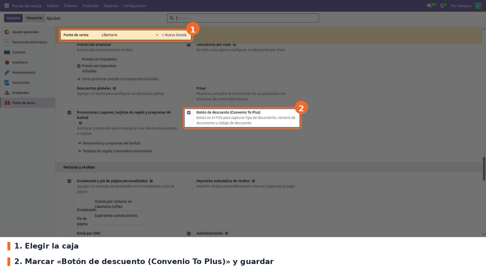
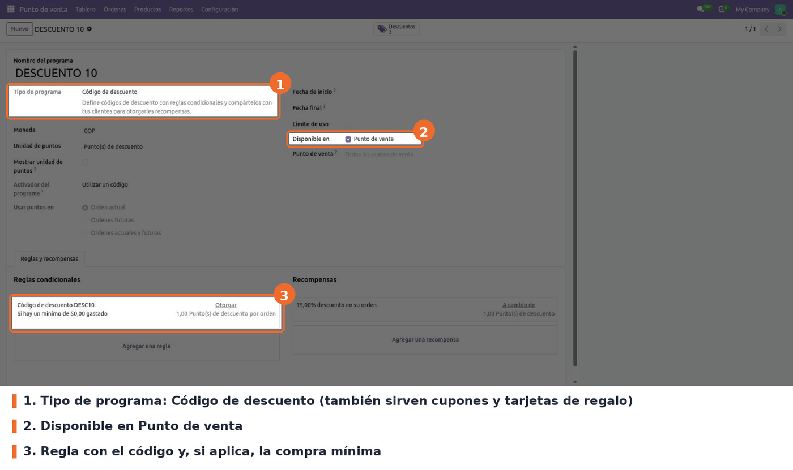
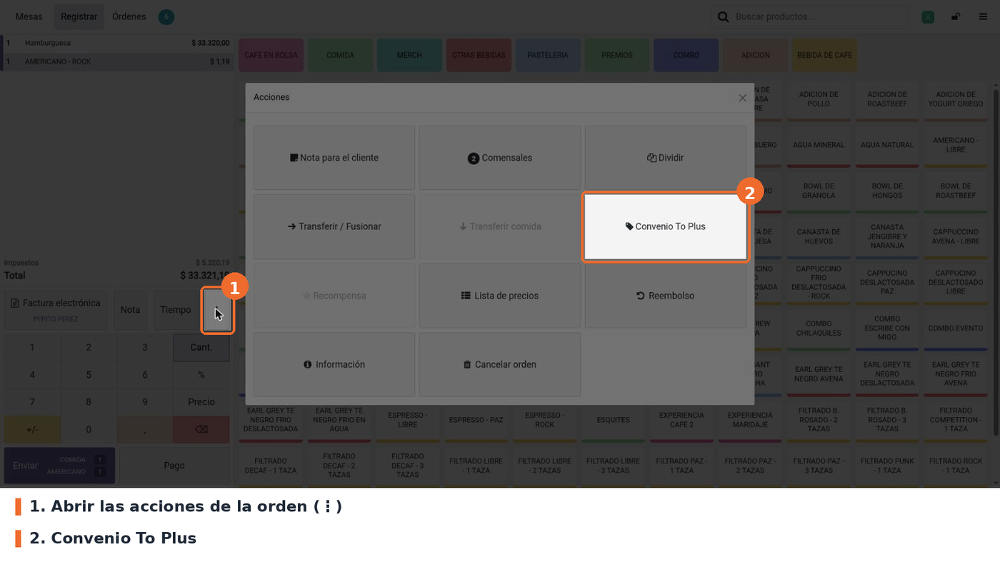
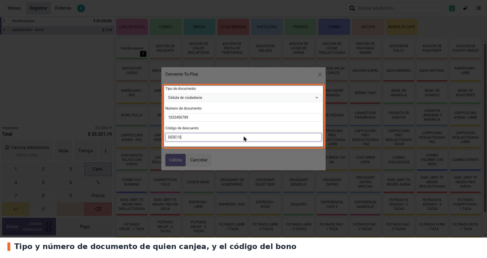
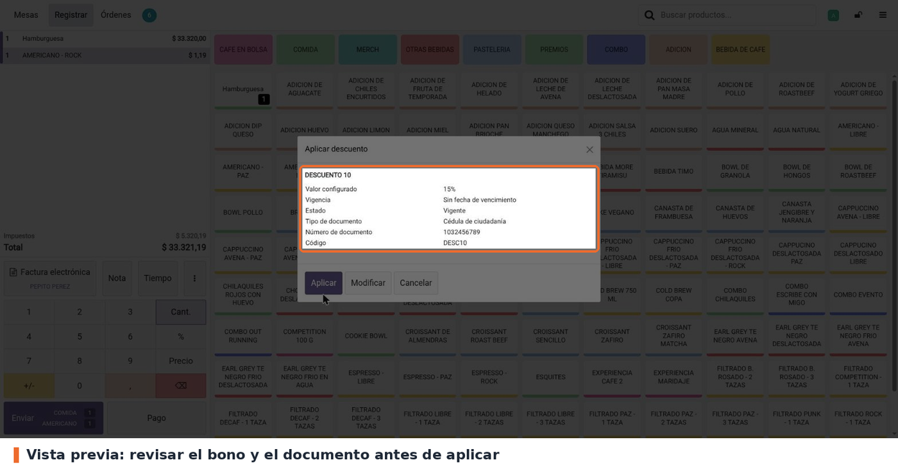
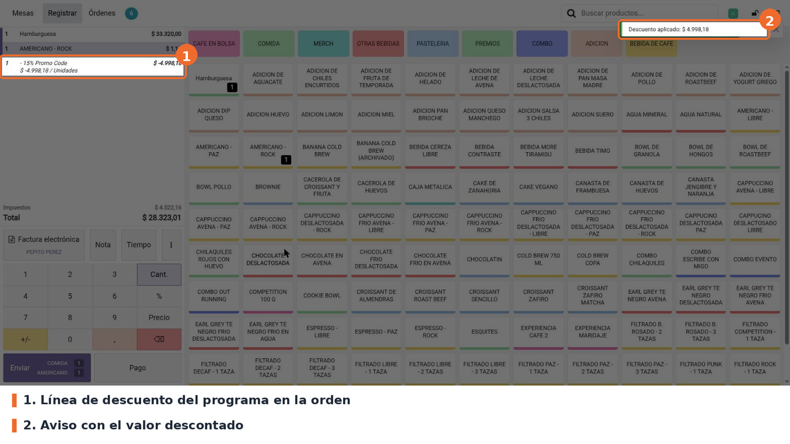
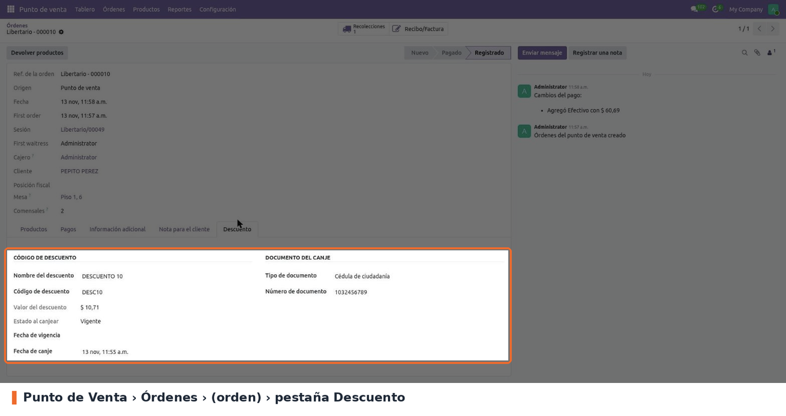

Agrega al Punto de Venta el botón Convenio To Plus para canjear bonos (códigos promocionales, cupones y tarjetas de regalo) pidiendo el tipo y el número de documento de quien canjea, y deja el canje registrado en la orden para poder rastrearlo después.
El módulo no crea descuentos propios: aplica los programas de Punto de venta › Productos ›
Descuentos y lealtad con la lealtad nativa de Odoo (pos_loyalty). En las cajas donde está
activo, el botón reemplaza al «Enter Code» de Odoo.
pos_loyalty tenga la forma esperada: si una
actualización de Odoo la cambia, el botón muestra un aviso en vez de aplicar descuentos a medias.Botón por caja. En Punto de Venta › Configuración › Ajustes, elegir la caja en el selector superior y, en el bloque de precios y descuentos, marcar Botón de descuento (Convenio To Plus). Viene marcado por defecto. Desmarcado, esa caja vuelve a mostrar el «Enter Code» de Odoo.

Punto de Venta › Configuración › Ajustes: elegir la caja y marcar «Botón de descuento (Convenio To Plus)»
El botón aparece solo si la caja tiene cargado al menos un programa canjeable con código.
Programas de descuento. En Punto de Venta › Productos › Descuentos y lealtad, crear el programa con Disponible en: Punto de venta. Sirven los tipos Código de descuento, Cupones, Promociones (con regla de código), Tarjeta de regalo y Cupones para la próxima orden; las tarjetas de lealtad por puntos no se canjean con este botón.

Programa de tipo «Código de descuento» con la regla del código y la compra mínima
Con los productos ya en la orden, abrir las acciones (⋮) y pulsar Convenio To Plus:

Acciones de la orden: botón «Convenio To Plus»
Elegir el tipo de documento, escribir el número y el código, y pulsar Validar. Los errores (número vacío o con puntos, código inexistente, vencido o ya aplicado) se muestran en el mismo formulario:

Formulario del canje con tipo de documento, número y código
La vista previa muestra el bono y el documento. Modificar vuelve al formulario y Aplicar activa el código en la orden:

Vista previa antes de aplicar el bono
El descuento queda como una línea más de la orden y un aviso muestra el valor descontado:

Orden con la línea del descuento y el aviso del valor aplicado
Si la orden todavía no cumple las condiciones del bono (por ejemplo, la compra mínima), el código queda activado con el aviso «el descuento se aplicará cuando la orden cumpla las condiciones del bono». La línea aparece sola cuando se cumplan, también si la orden se envió antes a cocina.
Se cobra normalmente. Al sincronizar la orden pagada, el servidor registra el canje en la pestaña Descuento de la orden:

Pestaña «Descuento» de una orden pagada
Las pruebas automáticas de la lógica del servidor están en tests/test_discount_code.py (22
casos). Se corren en una base de pruebas, nunca en una base real, con
odoo -d <base_de_pruebas> -i pos_discount_code --test-enable --test-tags /pos_discount_code --stop-after-init.
El popup se prueba a mano en una caja, recargándola después de actualizar el módulo:
static/src/js/loyalty_adapter.js es el único archivo que usa el estado interno de
pos_loyalty (codeActivatedProgramRules, couponPointChanges, disabledRewards,
_code_activated_coupon_ids) y sus métodos internos. Al actualizar Odoo es el archivo a revisar.odooleal instalado, su versión 19 solo deja aplicar recompensas cuando el programa Leal
está activo en la orden, para cualquier programa. Mientras no se corrija en ese módulo, el
descuento del bono no llega a la orden en las cajas sin Leal. Se valida en staging junto con
odooleal.